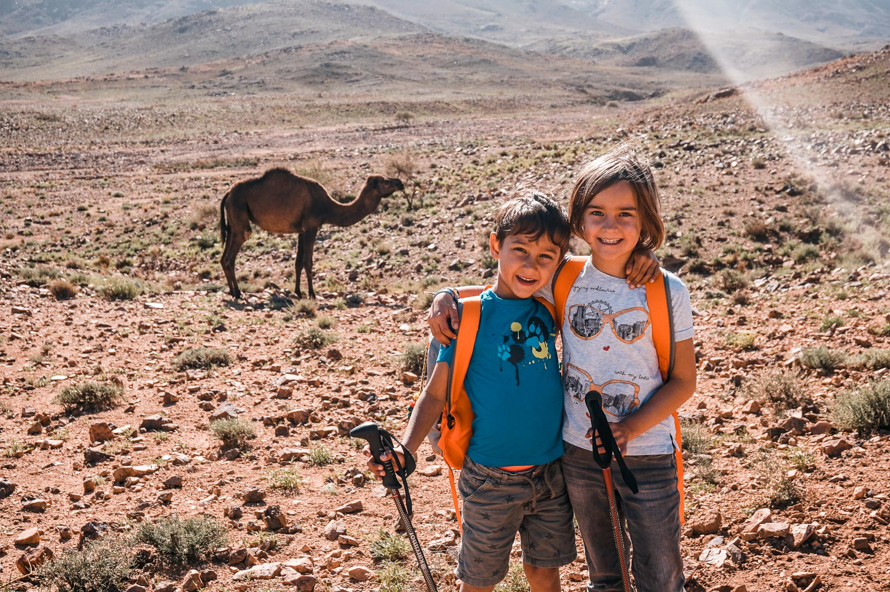
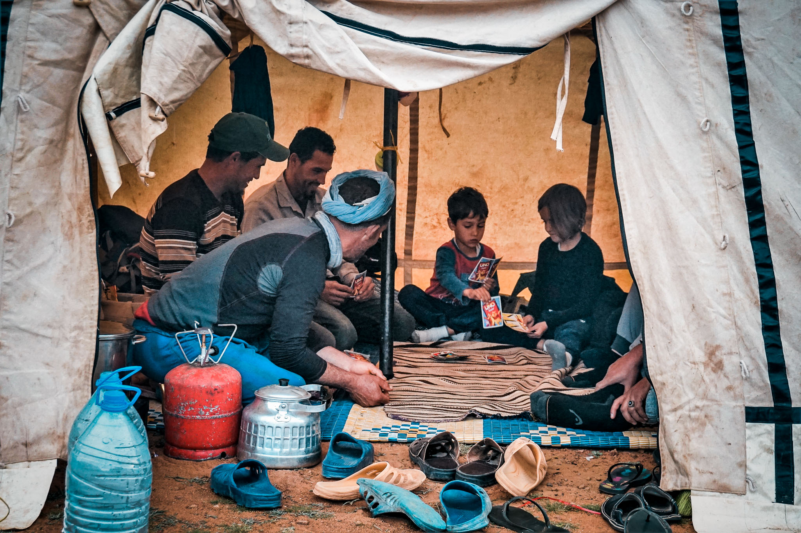

Day 1: Ouarzazate – Aït Youl - Ashmarah (1600m)
Early morning transfer by minibus or 4WD from Ouarzazate, via El
kalâa mgouna (route of 1000
Kasbahs) to Aït Youl, the starting point of our hike where we will
meet the muleteers. After
lunch we will gradually walk up to our first bivouac at Ashmarah.
Overnight stay in tents.
Day 2: Ashmarah – Tagmoute (1790m)
Steady climb up to cross the Tizi n’Tagmout (2000m). Looking out over
the mountains, we still
can see the snowy peaks of the High Atlas in the north before we
enter the real Saghro
Mountains. We’ll start descending a beautiful but steep and rocky
path to climb up again on the
other side of the gorges. At the end of the day, we'll arrive to our
bivouac in
Tagmoute, next to a well. Overnight stay in tents.
Day 3: Tagmoute – Assaka n’Aït Ouzzine - Irhissi
(1630m)
Today we’ll walk between two mountains ranges, heading to the village
of
Assaka n’Ait Ouzzine (1600m).
After lunch we will climb up to the endless plain of Tine Ouayour
(2100m) and then we’ll
start the long descent with a steep path through the gorges of
Irhissi at the end. Overnight
stay in tents near the ruins of an old kasbah.

Day 4: Irhissi – Berkou - Igli (1733m)
Half way through our trip, we’ll follow the valley to Berkou (1900m),
climb the Tizi n’Taggourt
and move on to Tadaout n’Tablah where we’ll admire the fabulous rock
pinnacles (including
"the elephant"). Overnight stay in a gîte in Igli where you can
enjoy
a hot shower.
Day 5: Igli – Jebel Kouaouch - Tizi n’ouarg (2250m)
Today will be a rather tough day. From Igli we will immediately climb
steeply up to a first pass
where we’ll admire the beautiful view of the small village and its
surroundings with
shapely rock formations. After this first climb the path becomes a
little less steep to the pass
(2480 m) just below the Jebel Kouaouch. We’ll climb the summit (2592
m). Looking out over
the mountains, we will see the snowy peaks of the High Atlas in the
north and the beginning
of the desert in the southeast. Via the Tizi-n-Ouarg we’ll descend
to our bivouac at
Almou-n-Ouarg (2250 m) where the nights can be rather cold.
Overnight stay in tents.

Day 6: Tizi n’ouarg – Tagdilt - Ouarzazate
On our last day of hiking we’ll first pass Isk n’Iferd (2400m) and
walk slowly down to
Tagdilt for lunch. After lunch a 4WD or minibus will transfer us to
Marrakech or Ouarzazate, where we will spend our
last night in a hotel or riad.
Day 7: Marrakech or Ouarzazate
Got to catch that airplane!